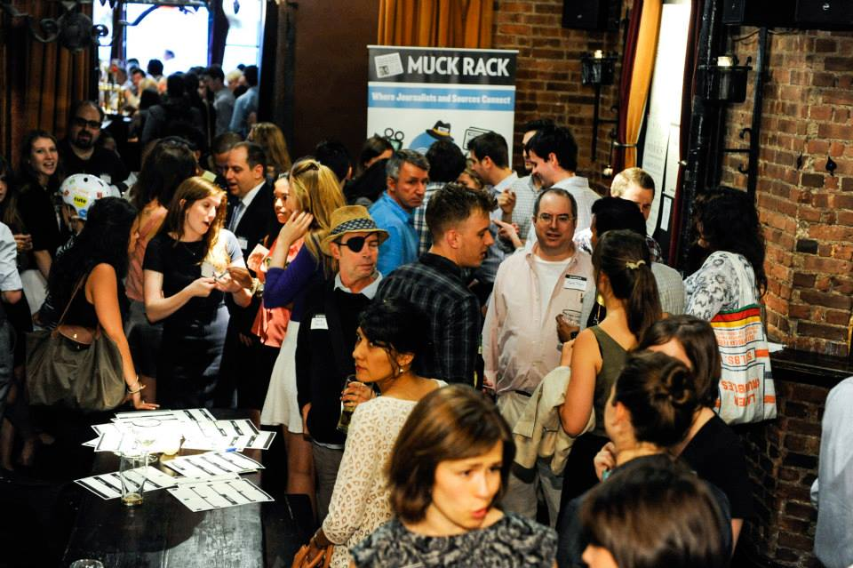
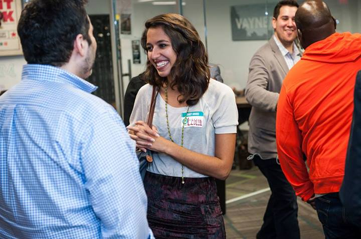

Muck Rack is a series of tools to filter and analyze how journalists are covering the news in real-time, alongside Muck Rack Pro helping you find out what journalists are saying about things that matter to your business or organization.
The Shorty Awards honor the best of social media each year. Millions of people participate in The Shortys to recognize individuals and organizations producing great content on Twitter, Facebook, Tumblr, YouTube, Foursquare and the rest of the social web.
Nominate your favorite people on social media for a Shorty Award, watch a few clips from prior ceremonies on YouTube and perhaps take a shot at winning a Shorty.
Spice up your Twitter timeline by following a few journalists on Muck Rack or liven your inbox with the Muck Rack Daily.
Get your best work on the social web recognized in the Shorty Industry Awards.
Engage social media influencers by sponsoring the Shorty Awards or partnering with us on a category. Existing sponsors include Showtime, Nokia, PepsiCo and the Knight Foundation.
Create your Journalist Profile and Portfolio on Muck Rack to build your following, accelerate your career and scoop your colleagues.
Request press credentials for the Shorty Awards.
Join the ranks of Neil Patrick Harris, Conan O’Brien, Jerry Stiller and The Daily Show’s Aasif Mandvi by appearing at the Shorty Awards in person or via video.
Nominate your favorite people on social media for a Shorty Award, watch a few clips from prior ceremonies on YouTube and perhaps take a shot at winning a Shorty.
Spice up your Twitter timeline by following a few journalists on Muck Rack or liven your inbox with the Muck Rack Daily.
Get your best work on the social web recognized in the Shorty Industry Awards.
Engage social media influencers by sponsoring the Shorty Awards or partnering with us on a category. Existing sponsors include Showtime, Nokia, PepsiCo and the Knight Foundation.
Create your Journalist Profile and Portfolio on Muck Rack to build your following, accelerate your career and scoop your colleagues.
Request press credentials for the Shorty Awards.
Join the ranks of Neil Patrick Harris, Conan O’Brien, Jerry Stiller and The Daily Show’s Aasif Mandvi by appearing at the Shorty Awards in person or via video.